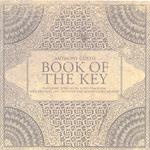

| Artist: | Anthony Curtis |
| Title: | Book Of The Key |
| Label: | Jester Records TRICK038 |
| Length(s): | 74 minutes |
| Year(s) of release: | 2004 |
| Month of review: | [08/2005] |
| 1) | Ruins | 12.15 |
| 2) | Gallabalba | 2.17 |
| 3) | Inland Sea | 3.09 |
| 4) | Book Of The Key | 23.24 |
| 5) | Hymn To Helios | 3.31 |
| 6) | Balinus | 3.58 |
| 7) | Saturnalia | 3.58 |
| 8) | From Towers To The Dome Of Heaven | 2.08 |
| 9) | Hikmat Al-ishraq | 16.17 |
| 10) | Oracle | 2.22 |
When we reach the title track things change: the track opens moodily with grouchy bass and threatening guitar, only to escalate after some minutes into an angry sounding duel between guitar and bass, urged on by the drums. This angry dueling slowly fades into a section in which the guitar clearly wins out with freaky and prolonged play. There are some idiosyncracies still there on the other instruments, for instance in the duel with the jazzy Fender Rhodes, but for the must of it this track is highly freaky and rather tiring.
With Hymn to Helios we return to the more laid back feel of the opening three tracks, which is more or less continued in Balinus. Saturnalia, on the other hand, starts off with a sharply King Crimson/ProjeKts alike guitar run, which is backed up by the bass/stick sound produced by Levin and the heavier drums.
Hikmat al-ishraq is another long track, focussing on guitar, Fender Rhodes and rolling drums. The speed is once again up on this one, creating a driven nervousness. Uncharacteristically the tracks ends peacefully. But just when you think that will see us to a quiet end Oracle opens with a bit of a road, simpering down into the now unexpected peacefull end.